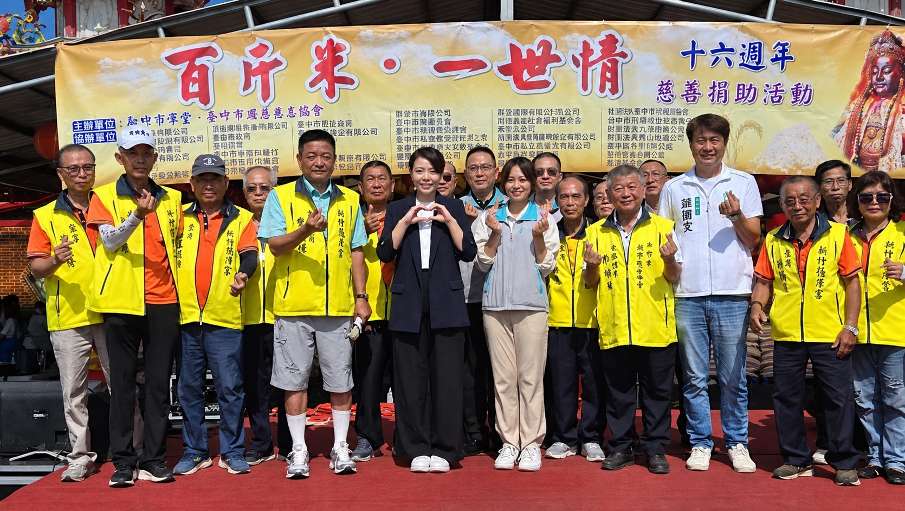

我們的足跡
從物資到健康，從教育到防詐，全方位守護每一個需要幫助的人

招牌活動
連續十多年的年度盛事。每逢歲末，協會於指澤宮發放白米、麵條、罐頭與乾糧，嘉惠新竹、竹竹苗地區約 1,000 戶持有中低收入戶證明或身心障礙手冊的家庭。
這不只是一場物資發放，更是一份延續多年的承諾——讓最辛苦的家庭，在年節前感受到不被遺忘的溫暖。
善行年表
從 2016 年至今，我們的足跡橫跨 8 大類善行；每一類底下，都是一場場具體的活動與一個個被接住的生命。
服務項目
定期發放白米、麵條、罐頭、乾糧等民生必需品，減輕弱勢家庭的生活負擔。
結合在地理髮師，為長者及弱勢鄉親免費剪髮，讓人煥然一新、重拾自信。
提供視力檢查、血糖篩檢與 X 光肺部檢查，及早關心鄉親的身體狀況。
活動現場備有熱騰騰的愛心餐點，讓受助鄉親吃得溫飽、吃得安心。
捐助新竹地區學校與清寒學子，讓孩子不因家庭經濟而失去學習機會。
攜手新竹市警方走入社區，向長者宣導防詐知識，守護鄉親辛苦的積蓄。